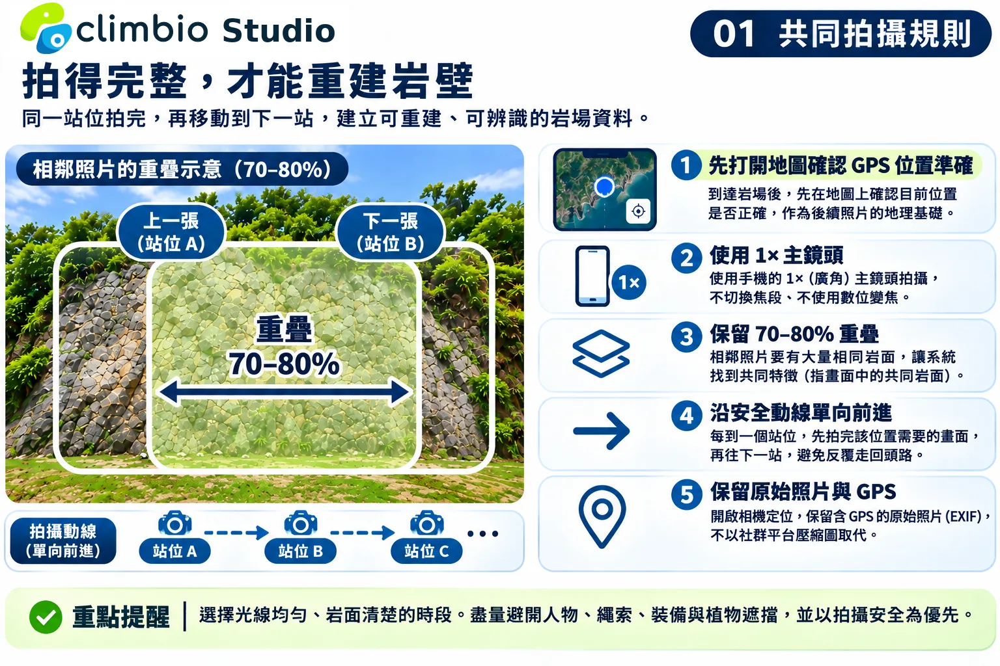
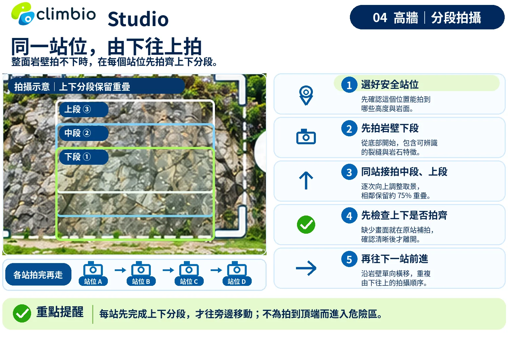
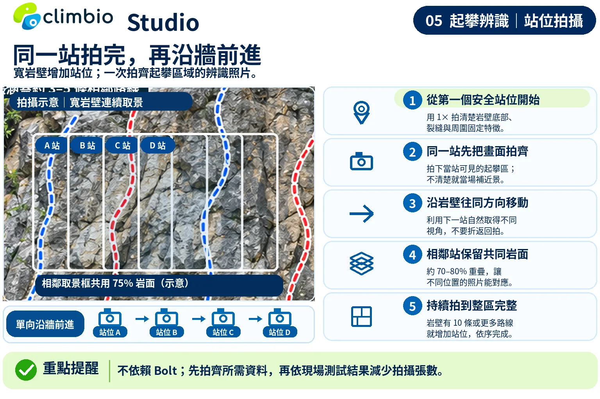
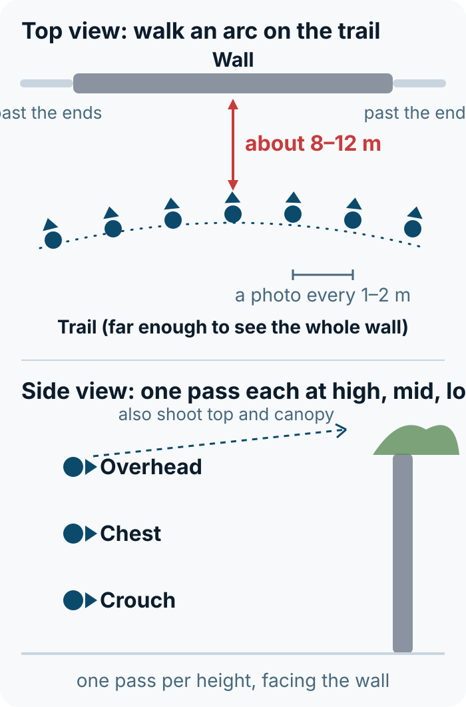

How to shoot 3D photos
Shoot completely so the wall can be rebuilt. Finish each station, then move to the next. For a crag 3D model (Redpoint lets readers walk along the wall and tap routes), add a second, step-back set.
Shared rules

- Confirm GPS on the map first: on arrival, check that your position is correct. It is the geographic basis for every photo.
- Use the 1x main lens: no lens switching, no digital zoom.
- Keep 70-80% overlap: neighboring photos must share plenty of rock so shared features can be found.
- Move one way along a safe path: finish each station before moving on, and avoid doubling back.
- Keep the original photos with GPS: turn on camera location and keep the original files (EXIF), not compressed copies from social platforms.
Shoot in even light when the rock face is clear. Avoid people, ropes, gear and plants in frame, and put safety first.
Boulders: circle the block

- Pick a safe starting point: start where you can see the main face clearly, without getting too close.
- Shoot the visible face at each station: fixed 1x lens, the full outline and fixed features first.
- Move in one direction: circle along a safe path, finish each station, do not walk back.
- Keep 70-80% overlap: neighboring photos keep plenty of shared rock.
- Fill gaps on the way: at corners, overhangs or the back, add detail shots from the current station.
Skip any side you cannot circle safely; make sure each photo is sharp and neighboring frames match up.
Low walls: whole face in frame

- Find a good distance: from a safe spot, make sure the top and bottom of the wall are both in frame.
- Shoot the full height: fixed 1x lens, with cracks and corners sharp.
- Move one way along the wall: if the wall is wide, move in order and finish each station.
- Overlap neighboring photos: keep 70-80% shared rock; do not slice photos by route count.
- Fill corners immediately: when passing corners or hidden areas, shoot them on the way without going back.
"Low" is not a fixed height: if one station can capture the whole face, treat it as a low wall.
High walls: one station, bottom to top

- Choose a safe station: check which heights and faces you can see from here.
- Shoot the lower section first: start at the base, including recognizable cracks and rock features.
- Add middle and upper sections from the same station: tilt up step by step, keeping about 75% overlap.
- Check top and bottom are covered: reshoot anything missing before you leave the station.
- Then move to the next station: shift sideways one way and repeat bottom to top.
Finish every section at a station before moving sideways; never enter a hazardous area just to reach the top.
Start-hold recognition: station shooting

- Start at the first safe station: with 1x, capture the base of the wall, cracks and nearby fixed features.
- Cover the frame at each station: shoot the visible start area; if it is unclear, take a close-up on the spot.
- Move along the wall in one direction: let the next station give a natural new angle; do not backtrack.
- Keep shared rock between stations: about 70-80% overlap so photos from different positions can be matched.
- Keep going until the area is complete: with 10 or more routes, add stations and finish them in order.
No bolts needed, and no start marks on site; capture what is needed first, then reduce the photo count based on field tests.
Crag 3D models: shoot a second set from farther back

The close-up method above (station by station) captures the wall near you and suits start-hold recognition. To let readers in Redpoint stand on the trail, see the whole wall and walk along it, the model is drawn from the readers' viewpoint, so that viewpoint needs photos: close-up photos carry no data for the farther-back angles, and those views turn foggy with ghosting at the top. Shoot two sets for the same crag: close-up (the sections above) plus this step-back set.
- Step back until the whole wall fits: stand on the trail about 8–12 metres from the wall (far enough that top and bottom are both in frame). Do not move closer or climb onto loose rock for it.
- Walk an arc along the wall, one photo every 1–2 metres: face the wall in every shot, roughly square to its centre. Take a step, take a photo; do not stand still and spin.
- One pass each at high, mid and low: chest height, arms raised (looking down at the upper wall), and crouched (the base and the ground). Walk the same arc each time.
- Shoot the top and the canopy: aim up at the top of the wall, the trees and the skyline so the model has no missing piece or blank edge on top.
- Go past both ends: walk about 5 metres beyond the wall edge on each side and shoot back, so the model does not stop abruptly.
- Add a set at inside corners, arêtes and bends: besides facing the wall, shoot again about 35° to the left and to the right so recessed and protruding faces are covered.
The shared rules above still apply: 1× main lens, no digital zoom, keep original photos with GPS, shoot in even light, avoid people, ropes and gear. Wind makes trees and grass sway and those areas blur, so pick a calm time. Photos are sorted afterwards in one go; you do not need to pick shots or mark routes on site.
How many photos?
Follow the spacing: a 20-metre wall has roughly 10–20 positions on the arc, times three heights, plus the ends, the top and the corners, so a few dozen photos. The count is still being field-tested; follow the spacing and shoot completely. Extra photos are fine, since unusable ones are filtered out later.
Why are the close-up photos not enough?
A Gaussian splat is only sharp near where photos were taken. Readers in Redpoint look at the whole wall from the trail; if no photo was taken from there, that view is guessed by the model and comes out foggy. So no matter how many close-ups you shot, the step-back set is needed on top.
What happens after shooting?
See Turn a guidebook into 3D: building the model, placing the routes from your 2D guidebook on the 3D wall, checking and publishing.
Want to know more
Why is GPS required?
GPS is required for photo import. Keep the original photos with GPS, not versions compressed by messaging apps or social platforms.
How many photos?
It depends on the width and height of the wall. Photo counts and the resulting model and recognition quality still need field testing; shoot completely first, then reduce.
What happens after shooting?
Import the photos in Studio and turn them into readable climbing data. See How Studio works.